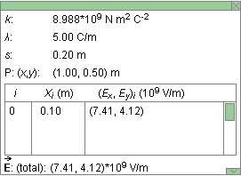

Prerequisites
Students should be somewhat familiar with the concept of electric charge and Coulomb's law as well as with the field concept. They should have a basic understanding of vectors including scalar components of vectors.
Learning Outcomes
Students will have reviewed the definition of the electric field and will be able to calculate the electric field vector at a given field point due to a point charge. They will be able to apply the superposition principle to calculate the electric field due to several point charges, and they will be able to describe and calculate the electric field due to an infinite line charge.
Instructions
Students should know how the applet functions, as described in Help and ShowMe.
The applet should be open. The step-by-step instructions in the following text are to be done in the applet. You may need to toggle back and forth between instructions and applet if your screen space is limited.
 Laws and Definitions
Laws and Definitions
 Coulomb's Law of
Electrostatics
Coulomb's Law of
Electrostatics
 Definition of the Electric Field and
Electric Field Lines
Definition of the Electric Field and
Electric Field Lines
 Electric Field Due To A Line Charge
Segment
Electric Field Due To A Line Charge
Segment
 Electric Field Due To Several
Line Charge Segments
Electric Field Due To Several
Line Charge Segments
 Electric Field Due To An Infinite Line
Charge
Electric Field Due To An Infinite Line
Charge

Any two particles carrying electric charges q1 and q2 exert electrostatic forces on each other. If the two charges have the same sign, the particles exert repulsive forces on each other. If they have opposite sign, the forces are attractive. The force exerted on Particle 1 has the same magnitude F as the force exerted on Particle 2, equal to
F = k|q1||q2| / d2
where d is the separation between the two particles and k is a universal constant whose value is
One can use a vector equation to express both the magnitude and the direction of the Coulomb law force. Let
be the displacement from Particle 1 to Particle 2, and let
12 be the Coulomb force exerted by Particle 1 on Particle 2. Then
By Newton's third law, the force
Comment on Equ.(3). Equ.(3) implies that the force exerted by Particle 1 on Particle 2 is in the direction of the displacement
The magnitude of the force

Definition of Electric Field and Electric Field Lines
If
=
is called the electric field at the given point.
Comment 1. Since the force is proportional to the
charge q, the electric field is independent of
q and characterizes an "electric intensity" at
the given point in space that is present without the
test particle and does not depend on any properties of
the test particle.
Comment 2. The SI-unit of the electric field is N/C. One can show that 1 N/C = 1 V/m where "V" stands for "volt", the SI-unit of electric potential.
Comment 3. The electric field is defined at all
points in space. It is therefore not a single vector, but
a "vector-valued function defined on space". This simply
means that to describe the electric field one must
specify the vectors at all points in space.
Comment 4. An electric field line is a line (not a straight line in general) that indicates the direction of the electric field vectors at points along the line.
The electric field vector at a given point along an electric field line is tangential to the line at that point.
Preliminary Remark. The applet displays everything in only two dimensions. These are represented by an x and a y axis. The charge-carrying wire is laid out along the x-axis and the field points at which the electric field vectors are simulated lie in the x,y plane, as do the field vectors themselves. Therefore the z-coordinate of a field point and the z-component of any electric field vector are zero always and are simply omitted, for brevity's sake.
Restricting everything to the x,y plane involves no loss in generality because of the rotational symmetry of the electric field around the wire.
Task 1. Under "Laws and Definitions" above, read the sections on
Exercise 1. Derive an expression for the electric
field vector
and the magnitude E of this vector at a field point P
due to a point charge Q. Assume that the displacement
vector from the point charge to the field point is
. The
distance d between these two points is equal to the
magnitude of the vector .
What is the direction of the electric field vector at P for different signs of the source charge Q?
Answer. Expression (3) for the Coulomb force needs to be
combined with Definition (5) of the electric field vector. Let
Particle 1 carry the source charge and let Particle 2 be the
test particle. Thus, q1 = Q and
q2 = q and the force exerted by the source charge on
the test particle is equal to
 =
k Qq / d3.
=
k Qq / d3. (6)
(6)
Substituting this expression for into Equ.(5) gives for the
electric field vector at point P
 =
k Q / d3.
=
k Q / d3. (7)
(7)
Taking magnitudes of both sides of Equ.(7) and canceling a factor of d on the right-hand side gives for the magnitude of the electric field at P
 E = k |Q| /
d2.
E = k |Q| /
d2. (8)
(8)
The direction of the electric field vector is the same as that of
if Q
is positive, i.e., away from the source charge. For negative
Q the direction is the opposite, i.e., towards the
source charge.
Question 1. The applet lets you select short segments of a uniformly charged straight wire. The applet treats each such segment as a point charge located at the center of the segment and evaluates the electric field due to the segment according to Equ.(7).
The length s of each segment is 0.20 m. Suppose the linear charge density l along the wire, i.e., the charge per unit length, is 5.00 C/m. What is the charge Q on one wire segment?
Answer. The linear charge density l is defined as
 l = Q / s
.
l = Q / s
. (9)
(9)
Therefore,
 Q = l s =
5.00×0.20 = 1.00 C.
Q = l s =
5.00×0.20 = 1.00 C. (10)
(10)
There is 1.00 C of charge on each 0.20-m wire segment.
Exercise 2. Reset  the applet.
the applet.
Select the Segments button, and select Segment 0, which is the segment immediately to the right of the origin. Its center is at x = 0.10 m. Use the Grid to help you do this, and verify from the Data box that Segment 0 is selected.
Make sure the line charge density l is set to 5.00 C/m.
Take the field point P to be at (x,y) = (1.00, 0.50) m. The Data box will show the coordinates of P. Set the scale slider to 500, deselect the Resultant button, and select the Vectors button instead.
You should see the configuration shown in Figure 1 below, with a red arrow representing the electric field vector at the given field point due to Segment 0.

Figure 1
Use Expression (7) to calculate the electric field vector
0
at P due to Segment 0. Give your answer in terms of the
x and y components of the vector.
Answer. Let us first calculate the displacement
and the
distance d from the center of the segment to P.
Since the center of Segment 0 is at (x,y) = (0.10, 0) m and point P is at (x,y,z) = (1.00, 0.50) m,
 = (1.00
- 0.10, 0.50 - 0) = (0.90, 0.50) m
= (1.00
- 0.10, 0.50 - 0) = (0.90, 0.50) m (11)
(11)
 d =
d =  [0.902 + 0.502] = 1.0296
m.
[0.902 + 0.502] = 1.0296
m. (12)
(12)
We are now ready to substitute the pieces into Equ.(7). Thus,
 0 =
8.988×109×(1.00/1.02963)
(0.90, 0.50) = (7.41, 4.12)×109
N/C.
0 =
8.988×109×(1.00/1.02963)
(0.90, 0.50) = (7.41, 4.12)×109
N/C. (13)
(13)
This is the electric field value shown in the Data box in Figure 2 below.

Figure 2
Exercise 3. Continuing from Exercise 2, select Segment
7 at x = 1.50 m. Calculate the electric field
7 due to this segment at the same
field point P as in Exercise 2. Check your answer in the
Data box.
Exercise 4. Continuing from Exercise 3, make a sketch in your Notebook showing the wire with Segments 0 and 7, the field point P, and the contributions to the total field vector at P due to the two segments. Then use the applet to check your sketch. Make sure the Resultant button is deselected, but the Vector button is selected.
Exercise 5. Continuing from Exercise 4, reverse the sign of the line charge density by setting l to -5.00 C/m. Draw the new electric field vectors due to Segments 0 and 7 in your Notebook. Explain any differences compared to the case of positive charge density.
Exercise 1. Reset the applet. As in Exercise 2 of the preceding section, set the field point P at (x,y) = (1.00, 0.50) m. Select Segments 0 and 7 at x = 0.10 m and x = 1.50 m, respectively. Make sure the line charge density is set to l = 5.00 C/m.
Use the superposition principle and the results of the
preceding section to calculate the electric field vector
at P due to
the two charge segments.
Hint. The Data box displays the partial electric
field vectors 0 and 7 due to Segments 0 and 7. Add the
x-components of the two vectors and the
y-components to obtain the x and y
components of the resultant field vector. The components of
the resultant vector are also shown in the Data box. To display
the vector graphically (in green), select the Resultant
button.
Do the required addition in your Notebook.
Exercise 2. Continuing from Exercise 1, add two more segments in addition to Segment 0 and 7. Choose one of the new segments as far to the right of P as Segment 0 is to the left and the other one as far to the left of P as Segment 7 is to the right. What are the label numbers of the new segments?
Deselect the Resultant button and select the Vectors button again, to display the four electric field vectors at P that are due to the four selected segments. The paired segments should produce field vectors that are mirror images of each other about a vertical line through P. In your Notebook, sketch the four segments and point P with the four corresponding field vectors. Tentatively, draw in the resultant of the four vectors as well.
Calculate the resultant vector of the four partial vectors, i.e., calculate the total electric field vector at P due to the four chosen charge segments. Use the symmetry of the arrangement to simplify the calculation.
Compare your result with that shown in the Data box. Select the Resultant button to display the total electric field vector at P in green. Does its direction agree with what you expected? Discuss why the direction should be as shown in the applet, paying attention to the symmetry of the arrangement.
Exercise 1. Reset the applet. As in the preceding sections, set the field point P at (x,y) = (1.00, 0.50) m. Select the Segments button, and select all segments available in the window. Record the total electric field vector due to all selected segments as shown in the Data box.
Then deselect the Segments button. This selects the entire infinite straight wire. Record the total electric field vector at P due to the charge on the infinite wire. In terms of the superposition principle combined with relevant aspects of Equ.(7), explain the differences in the x and y components of the two total field vectors that you have recorded.
Exercise 2. For an infinitely long straight current-carrying wire, an exact integration (summation of the infinitesimal electric field vectors due to the infinitesimal line charge segments) gives the following simple expression for the total electric field vector at a field point a distance y from the wire:
 =
k (0, 2l / y).
=
k (0, 2l / y). (14)
(14)
Use this equation to calculate in the present case. The result
should agree with that shown in the Data box.
Compare the denominators in Eqs.(8) and (14). There are two differences. What are they? Check that the right-hand side of Equ.(14) has the dimensions of an electric field, i.e., N/C.
Comment. The denominator in Equ.(14) has the distance y of the field point P from the wire to the first power. This is the result of the integration over the infinite wire.
Exercise 3. Continuing from Exercise 2, double and triple the distance y of point P from the wire. Record the corresponding values of the y-component of the field vector, which is the only non-zero component. Are the values consistent with the y-dependence as given in Equ.(14)?
Exercise 4. Continuing from Exercise 3, move the field point P parallel to the wire without changing the distance y of the field point from the wire. Do this twice: (a) when the Segments button is deselected so that the field vector shown is that due to the infinite wire and (b) when the Segments button and all wire segments in the window are selected.
In case (a), when looking at the field due to the infinite wire, display the resultant vector while moving point P. Adjust the scale factor so that the entire vector fits into the window. In case (b), when looking at the field due to the portion of the wire that fits into the window, hide the resultant vector and display the vectors due to the individual segments while moving point P. Again, choose a suitable scale factor. Repeat this with the resultant vector displayed, but reduce the scale factor again so that all of the resultant is visible.
Observe the dependence of the total field on the position of point P in the two cases. Describe what differences you observe, and explain your observations in terms of Equ.(7) and the principle of superposition.